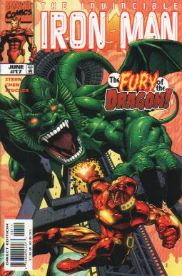
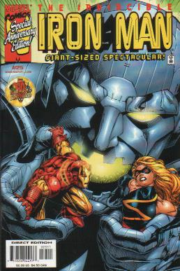

|
|
Comics of
Iron Man vol. 3 #17- Fin Fang Foom spits fire at Iron Man but misses. Iron Man tries high-frequency ultrasonics, but Foom swats Iron Man with his tail as he clutches his ears. Iron Man is driven through one high rise and gets wedged into another. Foom palms Iron Man and says that Iron Man probably thought that he was destroyed, but that it is now Iron Man who will die. Iron Man’s boot jets throw Foom off balance and knock him over. Iron Man blasts Foom, but it is little more than a sting to him. Foom flies after Iron Man. Inside Foom’s head floats the form of Billy Yuan. Foom says that Billy surprises him and that he did not expect such persistence. Billy recognizes the voice, and Foom reminds him of their deal. Foom gave him power and now he is in control of Billy’s body. Iron Man notices that Fin Fang Foom is just staring off into space. As Foom is yelling at Billy for his defiance Iron Man flies down Foom’s throat hoping that he is more vulnerable inside than his tough hide is on the outside. Foom spits Iron Man out with a peal of fire. Iron Man creates some holographic Iron Men to distract Foom, but Foom says that he doesn’t have time for this and dives into the water. Iron Man goes in after him, but Foom has shrunken down to a tenth of his size and has buried himself in the bed. Foom says that he will go after Iron Man as soon as he gets Billy out of his memory. Foom breathes on Billy, but Billy is unharmed inside his mind. Foom thinks that he must get Billy to fight him so he can destroy him. Foom rises up to his full size and flies to the hospital he saw inside Billy’s mind. Foom finds Billy’s sister in her coma. Foom is trying to get Billy to try and stop him, but suddenly Iron Man is back and he hits Foom across the head. Foom breaths fire on Iron Man, but Iron Man is using the fire to boost his power. Iron Man fires the power back on Foom as pulse bolts. Foom falls into the water. When he comes up he discovers that the other Iron Men are illusions. Billy uses Foom’s tail and wraps it around Foom’s throat. Iron Man has a battleship fire seven surface to air missile (SAMS) at Foom. Billy opens Foom’s up to leave him wide open for their impact. Iron Man blasts Foom with another pulse bolt. Foom falls over backwards. Inside his mind Billy Yuan dies. Outside Foom says, “Arrogant insect! I shall not… be defeated… by the sacrifice of… one lone mortal.” Foom’s eyes close and he collapses.  Iron Man vol. 3 #25- Ultimo has made his way through Raymond, Washington. With each step it takes Ultimo crushes trucks, trees, and more with its giant feet. Iron Man and a few jets catch up to Ultimo. The jets are firing on Ultimo, but it doesn’t even notice. Iron Man flies at Ultimo with an electro-magnetic field targeter. Ultimo fires eye beams at Iron Man, but Stark just dodges them. Iron Man flies onto the middle of Ultimo’s back and places the E-M field targeter where Ultimo can’t reach it. A bolt of lightning strikes Ultimo’s back on the EM field targeter, but this time Ultimo isn’t affected. Iron Man guesses that Ultimo must have made alterations to itself while it was dormant. Ultimo blasts Iron Man out of the sky with eye beams, but Iron Man gets his boot jets started again in time. Iron Man takes off to get help from the Avengers, but they are in Slorenia. He runs a diagnostics on his armor and then goes to recruit Goldenblade and Sapper from Sapper’s secret hideout where the remnants of his race are “stored”. Pepper contacts him there and says that Ultimo has almost reached Spokane. She wishes the Mandarin was about since he knew how to program it. Iron Man gets an idea and tells Rumiko and Morgan to get him the codes they used when they were controlling Ultimo. Iron Man, Goldenblade, and Sapper take off to try and stall Ultimo. Ultimo is fighting off two jets. He blasts one to pieces with an eye beam, and that causes the missiles to go haywire and hit the other jet. Ultimo steps on a house as people are still be evacuated. Iron Man blasts Ultimo and draws his attention. From behind Goldenblade’s knives actually pierce Ultimo’s armor. Sapper then starts to suck energy out of Ultimo through the blades. Ultimo swats Sapper away. The Eagle Squadron had showed up to help stall Ultimo, but Ultimo palms the last one and crushes it in his hand. Iron Man manages to deploy the missiles via remote. They hit Ultimo right in the face, but Ultimo just laughs. A sober Warbird arrives and heads out to get the codes for Iron Man. Iron Man calls out to Ultimo. When Ultimo turns its head Iron Man fires a pulse bolt into Ultimo’s eye. Ultimo grabs his eye in pain and swats Goldenblade. Warbird returns with the codes. She keeps Ultimo swinging at her as Iron Man puts the codes onto Ultimo’s back. Iron Man has almost cracked the core when Warbird snatches him out of the way of Ultimo’s eye beam. Stark reaches Ultimo’s central program. Iron Man orders Ultimo to stop. Ultimo says that he obeys none but the Masters, and that they have not contacted him in millennia. He adds that Iron Man is not a Master. Ultimo is about to step on a bus when Iron Man shouts, “Ultimo! I am your Master! You must stop.” Ultimo freezes and then falls over with one leg in the air. Iron Man powers up Sapper’s ship with Ultimo’s energy and sends him on his way. Ultimo is being taken apart piece by piece.
RETURN TO IRON MAN'S INTRODUCTION PAGE
|